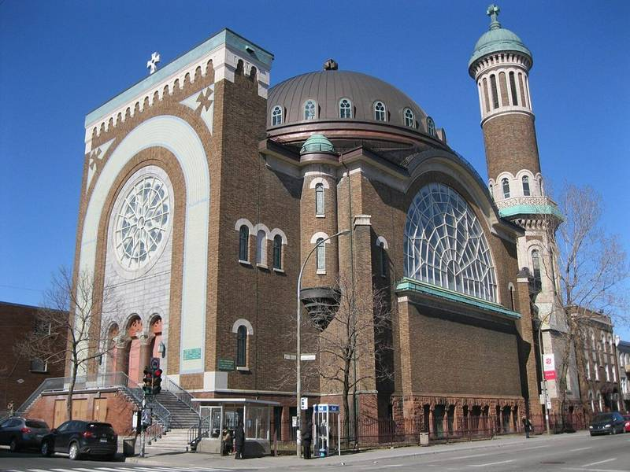
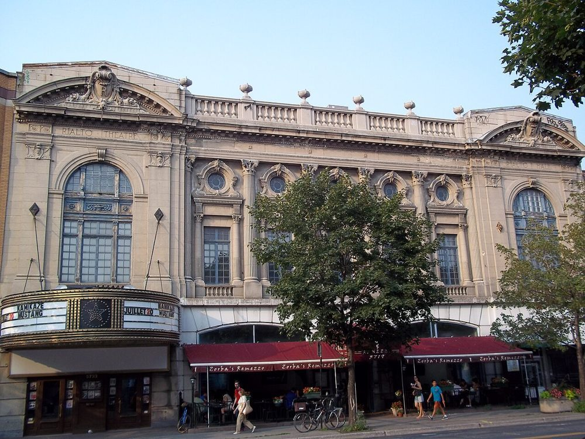
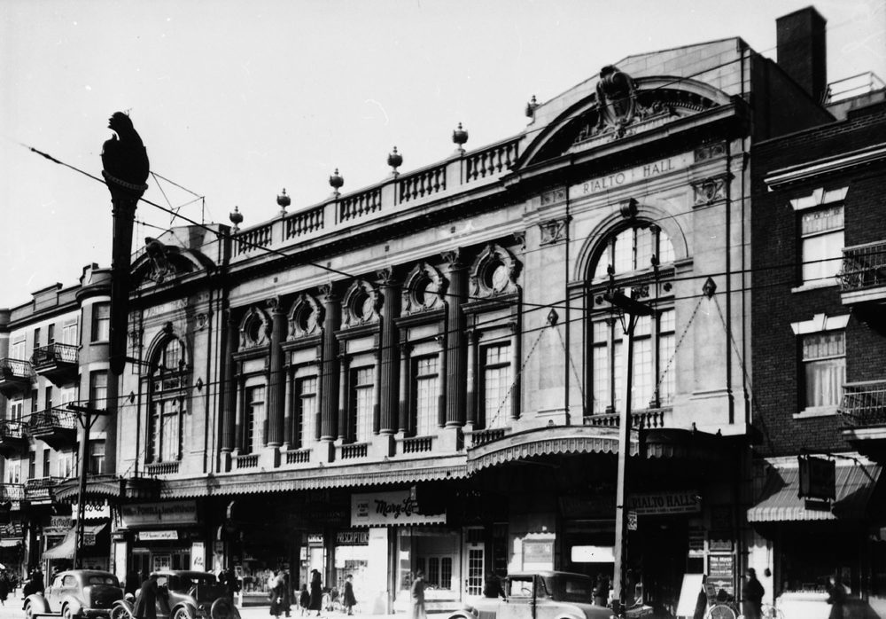
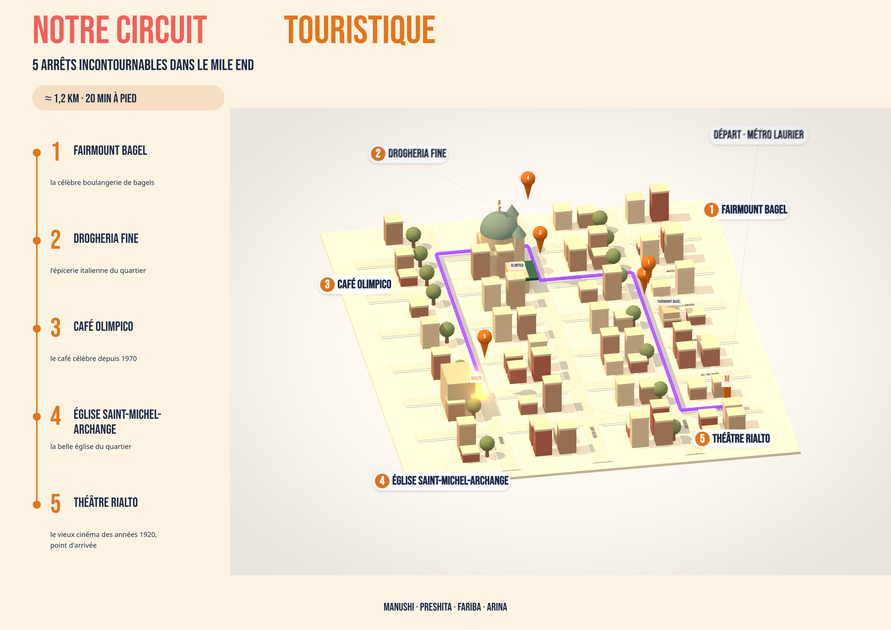

01
Fairmount Bagel
74 Av. Fairmount O.
Fairmount Bagel est la célèbre boulangerie de bagels du Mile End, ouverte depuis 1919. Les bagels sont roulés à la main et cuits au four à bois. Elle est ouverte 24 heures sur 24 !
Voir sur la carte ↗Départ : station de métro Laurier (ligne orange)
Commencer le circuit ↓


Avant 1916

Avant 1936


